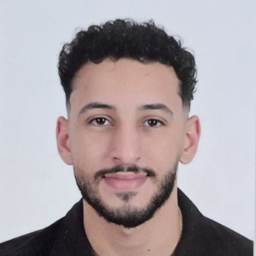

Computer and Intelligent Systems Engineering · FUE
Noureldin Bassem Mohamed
AI · Machine Learning · Deep Learning Engineer
Fifth-year engineering student ranked 1st across all engineering departments. I build AI systems end to end, from YOLOv8 medical image detection and RAG assistants to an underwater robot that sees, and I ship them as working apps.
Featured projects
Ranked by difficulty and impact, hardest first.
All work
Every other project, continuing the ranking from 09.
Experience
Summer Internship Program 2026, AI track. Passed the Generative AI final assessment; trained in data analytics, ML, fraud risk, AI governance and ESG.
Built projects in transformers and RAG: fine-tuned DistilBERT for question answering and built a cited multilingual RAG assistant.
Lead the university's competitions program: find national and international competitions, select the strongest students and represent FUE.
Education and awards
CGPA 3.97/4.00, ranked 1st across all engineering departments.
"Top One" Certificate of Achievement for the highest performance.
Team Leader of WattWise; qualified for the NFTE Global Finals.
Egyptian Collegiate Programming Contest; qualified for the national competition.
Skills
- AI and ML
- Deep Learning, CNNs, LSTMs, Transformers, Transfer Learning, Object Detection, RAG, NLP, Computer Vision, Generative AI
- Libraries
- TensorFlow, Keras, PyTorch, OpenCV, Hugging Face, YOLOv8, ChromaDB, Scikit-learn, XGBoost, LightGBM, Optuna, SHAP, Pandas, NumPy, Streamlit
- Tools
- Git, GitHub, Docker (basic), Linux (Ubuntu), VS Code, Jupyter Notebook
- Data
- SQL Server, Power BI, DAX, Power Query, Excel, EDA, Data Cleaning
- Robotics
- ROS2, ESP32, STM32, Arduino, IoT, Sensors, MATLAB, Proteus
- Languages
- Python, C++, SQL, MATLAB, JavaScript · Arabic (native), English (fluent)
Get in touch
Open to AI, Machine Learning and Deep Learning roles and internships.